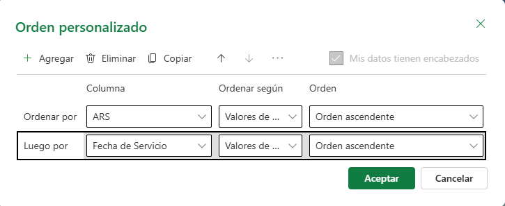

Práctica en Excel · SISALRIL
Depuración y organización de datos.
Una guía paso a paso para dejar una base de reclamaciones limpia, estandarizada y lista para analizar.
El punto de partida
Una base de datos que parece ordenada… pero no lo está.
La SISALRIL recibió reclamaciones de varias entidades de salud. Cada una capturó los datos a su manera, y el resultado se ve así:
| A | D | E | F | H | I | |
|---|---|---|---|---|---|---|
| 1 | ID Reclamación | ARS | Provincia | Tipo de Servicio | Fecha de Servicio | Monto Reclamado |
| 2 | REC-1126 | Primera ARS | Emerg. | 14/04/2025 | 13,248.00 | |
| 3 | REC-1322 | Se Na Sa | Santiago | Emergencia | 16-feb-25 | 14629 |
| 4 | REC-1098 | MAPFRE Salud ARS | distrito nacional | Emergencia | 2025-06-13 | 16018.5 |
| 5 | REC-1210 | ARS HUMANO | D.N. | Emergencia | 26.04.2025 | 4848.5 |
| 6 | REC-1077 | Humano | PUERTO PLATA | hospitalización | 3/2/25 | 155647.0 |
| 7 | REC-1035 | Primera ARS | Hospitalización | 25-ene-25 | 129,905.00 | |
| 8 | REC-1210 | ARS HUMANO | D.N. | Emergencia | 26.04.2025 | 4848.5 |
Registros duplicados
La misma reclamación aparece dos veces e infla los totales.
Nombres inconsistentes
Humano, ARS HUMANO y ars humano son la misma ARS.
Formatos de fecha distintos
Y además, algunas fechas no son fechas: son texto.
Celdas vacías
En provincia, tipo de servicio y prestador.
Las cifras corresponden al archivo de demostración de esta guía (56 filas).
La ruta de trabajo
Cuatro pasos, en este orden.
El orden importa: cada paso prepara el siguiente. Por ejemplo, no puedes ordenar por fecha si las fechas todavía son texto.
Estructura y limpieza
- Convertir en Tabla Ctrl+T
- Quitar duplicados
Estandarizar texto
- Unificar las ARS
- Unificar provincias y tipos de servicio
Formatos de celda
- Fecha corta dd/mm/aaaa
- Moneda RD$
Completar y ordenar
- Vacíos → No Registrado
- Ordenar por ARS y fecha
Antes de empezar: guarda una copia del archivo original (Archivo › Guardar como). Si algo sale mal, siempre puedes volver a empezar.
1Estructura y limpieza · Parte A
Convierte el rango en una Tabla de Excel.
- Haz clic en cualquier celda dentro de los datos (por ejemplo, A2).
- Presiona Ctrl + T.O por la cinta: Insertar › Tabla
- Verifica que el rango abarque todos los datos y marca «La tabla tiene encabezados».
- Pulsa Aceptar.
- Ponle un nombre: Diseño de tabla › Nombre de la tabla → tblReclamaciones
¿Por qué una tabla? Agrega filtros a cada encabezado, crece sola al añadir filas y te da acceso a Quitar duplicados con un clic. Todo lo que sigue se apoya en ella.
| 1 | ID Reclamación | Afiliado | ARS |
| 2 | REC-1126 | Yudelka Ureña Pérez | Primera ARS |
| 3 | REC-1322 | Yudelka Féliz Gómez | Se Na Sa |
| 4 | REC-1098 | Carmen Jiménez Castillo | MAPFRE Salud ARS |
1Estructura y limpieza · Parte B
Identifica y elimina los registros duplicados.
Primero, míralos (opcional pero recomendado):
- Selecciona la columna ID Reclamación.
- Inicio › Formato condicional › Reglas para resaltar celdas › Valores duplicadosLos ID repetidos se pintan de rojo.
Después, elimínalos:
- Con una celda de la tabla activa: Diseño de tabla › Quitar duplicados
- Deja todas las columnas marcadas y pulsa Aceptar.
Cuidado: si marcas solo la columna ARS, Excel dejará una fila por ARS y borrará casi toda la base. Duplicado significa toda la fila repetida.
2Estandarización de texto · Diagnóstico
El filtro es tu detector de inconsistencias.
- Haz clic en la flecha de filtro del encabezado ARS.
- Lee la lista: Excel muestra cada valor distinto una sola vez.
- Cada entrada que sobra es una variante que hay que corregir.
La meta: que la lista de ARS quede con exactamente 5 opciones. Repite el diagnóstico en Provincia y Tipo de Servicio.
Lo que el filtro no te muestra: no distingue mayúsculas, así que ARS HUMANO, ars humano y ARS Humano aparecen como una sola opción. Esas se corrigen con el Método A. En cambio, Santiago␣ (con un espacio al final) sí sale aparte, aunque se vea igual.
2Estandarización de texto · Método A
Buscar y reemplazar para corregir en bloque.
- Selecciona solo la columna que vas a corregir (clic en una celda de la columna y Ctrl+Espacio).
- Presiona Ctrl + H y haz clic en Opciones >>.
- Marca «Coincidir con el contenido de toda la celda».
- Escribe la variante en Buscar y el nombre correcto en Reemplazar con.
- Pulsa Reemplazar todos. Repite con cada variante.
Truco: Buscar no distingue mayúsculas. Si buscas ARS Humano y reemplazas con ARS Humano, corriges de una vez ARS HUMANO y ars humano. Hazlo con cada nombre estándar.
¿Por qué «toda la celda»? Sin esa opción, reemplazar Primera por Primera ARS convierte las celdas correctas en Primera ARS ARS.
2Estandarización de texto · Método B
Filtrar las variantes y sobrescribirlas de una vez.
Ideal cuando una variante tiene espacios ocultos o cuando quieres corregir varias variantes al mismo tiempo.
- Abre el filtro de la columna y desmarca (Seleccionar todo).
- Marca solo las variantes incorrectas de un mismo valor (ej.: Primera y ARS Primera). Aceptar.
- Selecciona las celdas visibles de esa columna.
- Escribe el nombre correcto y confirma con Ctrl + Enter.Se escribe en todas las celdas seleccionadas y visibles a la vez.
- Quita el filtro: Datos › Borrar
Filtrado
| 1 | ARS |
| 12 | ARS Primera |
| 29 | Primera |
| 38 | ARS Primera |
Ctrl + Enter
| 1 | ARS |
| 12 | Primera ARS |
| 29 | Primera ARS |
| 38 | Primera ARS |
Los números de fila en azul te avisan que hay un filtro activo: las filas ocultas no se tocan.
2Estandarización de texto · Referencia
Tabla de equivalencias.
Nombre estándar a la izquierda y las variantes que debes reemplazar a la derecha. Estas son las variantes del archivo de demostración; las de tu archivo pueden cambiar.
ARS
Provincia
Tipo de Servicio
Las tildes cuentan: para Excel, San Cristobal y San Cristóbal son textos distintos. Busca cada forma por separado.
3Formatos de celdas · Fechas
Una sola forma de mostrar las fechas: dd/mm/aaaa.
A. Convierte las fechas que son texto
- Selecciona la columna Fecha de Servicio.
- Ctrl + H → Opciones >> y desmarca «Coincidir con el contenido de toda la celda».Quedó marcada desde el Paso 2; si no la quitas, Excel no encuentra el punto.
- Busca . y reemplaza con / → Reemplazar todos.Excel reconoce 26/04/2025 como fecha real.
B. Aplica el mismo formato a todas
- Con la columna seleccionada, presiona Ctrl + 1.
- Número › Fecha y elige 14/03/2012 (fecha corta).O en Personalizada, escribe dd/mm/aaaa.
Antes
| H | Fecha de Servicio |
| 2 | 14/04/2025 |
| 3 | 16-feb-25 |
| 4 | 2025-06-13 |
| 5 | 26.04.2025 |
| 6 | 3/2/25 |
| 10 | miércoles, 18 de junio de 2025 |
| 17 | 01/14/2025 |
Después
| H | Fecha de Servicio |
| 2 | 14/04/2025 |
| 3 | 16/02/2025 |
| 4 | 13/06/2025 |
| 5 | 26/04/2025 |
| 6 | 03/02/2025 |
| 10 | 18/06/2025 |
| 17 | 14/01/2025 |
Detector rápido: las fechas y los números reales se alinean a la derecha; el texto, a la izquierda. Si una fecha queda a la izquierda (fila 5 antes), todavía es texto.
3Formatos de celdas · Montos
Formato de moneda RD$ para los montos reclamados.
A. Quita el «RD$» escrito a mano
- Selecciona la columna Monto Reclamado.
- Ctrl + H: busca RD$ y deja Reemplazar con vacío → Reemplazar todos.Con «Coincidir con el contenido de toda la celda» desmarcada. Esas celdas pasan de texto a número.
B. Aplica el formato de moneda
- Ctrl + 1 → Número › Moneda
- Posiciones decimales: 2.
- Símbolo: Español (República Dominicana) → Aceptar.En Excel de escritorio aparece como RD$ Español (República Dominicana); en Excel para la web, como $ Español (República Dominicana). Las dos son el peso dominicano.
Antes
| I | Monto Reclamado |
| 2 | 13,248.00 |
| 3 | 14629 |
| 4 | 16018.5 |
| 6 | 155647.0 |
| 10 | RD$118,920.00 |
Después
| I | Monto Reclamado |
| 2 | RD$13,248.00 |
| 3 | RD$14,628.50 |
| 4 | RD$16,018.50 |
| 6 | RD$155,647.00 |
| 10 | RD$118,920.00 |
¿Quieres que se vea «RD$» y no solo «$»? Usa Ctrl+1 › Personalizada y escribe "RD$"#,##0.00. Si Excel para la web no te deja crear el formato, abre el archivo con Abrir en la aplicación de escritorio.
No escribas «RD$» a mano. El símbolo lo pone el formato; el valor de la celda debe ser solo el número, para que se pueda sumar.
4Completado y ordenamiento · Vacíos
Completa los campos vacíos con «No Registrado».
- Abre el filtro de Provincia, desmarca todo y marca solo (Vacías). Aceptar.
- Selecciona las celdas vacías visibles de esa columna.
- Escribe No Registrado y presiona Ctrl + Enter.
- Borra el filtro y repite en Tipo de Servicio y Prestador.
Atajo para todas las columnas a la vez (solo Excel de escritorio): Excel para la web no tiene «Ir a Especial», así que ahí usa los pasos del filtro. En escritorio: selecciona la tabla → F5 → Especial → Celdas en blanco → escribe No Registrado → Ctrl+Enter.
| 1 | Provincia |
| 2 | No Registrado |
| 7 | No Registrado |
| 49 | No Registrado |
4Completado y ordenamiento · Orden
Ordena por ARS y luego por fecha de servicio.
- Haz clic en cualquier celda de la tabla.
- Datos › Ordenar (el botón grande, no el de A→Z).En Excel para la web se llama Orden personalizado.
- Primer nivel: Ordenar por ARS · Valores de celda · A a Z.En la web: Orden ascendente.
- Agregar nivel (en la web: + Agregar) → Luego por Fecha de Servicio · De más antiguos a más recientes.En la web: Orden ascendente.
- Aceptar.
Por eso el paso 3 va antes: si alguna fecha sigue siendo texto, Excel la ordena alfabéticamente y quedará fuera de lugar.

Antes de entregar
Lista de verificación.
Revisa cada punto. Si todos se cumplen, tu base está lista.
- Los datos están en una Tabla de Excel con filtros en cada encabezado.
- No hay duplicados.En la demostración quedan 50 filas: selecciona la columna ID y mira el «Recuento» en la barra de estado.
- El filtro de ARS muestra solo 5 nombres.
- El filtro de Provincia y el de Tipo de Servicio no tienen variantes.
- Todas las fechas están alineadas a la derecha y se ven como dd/mm/aaaa.
- Todos los montos se ven como RD$0,000.00 y se pueden sumar.
- No hay celdas vacías: donde faltaba el dato dice No Registrado.
- La tabla está ordenada por ARS (A→Z) y, dentro de cada ARS, por fecha.